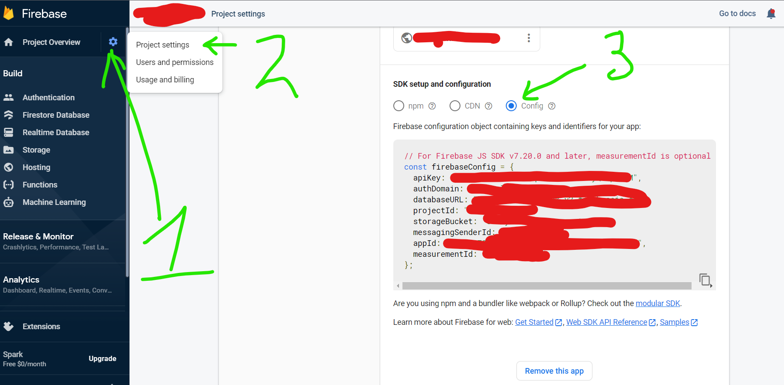
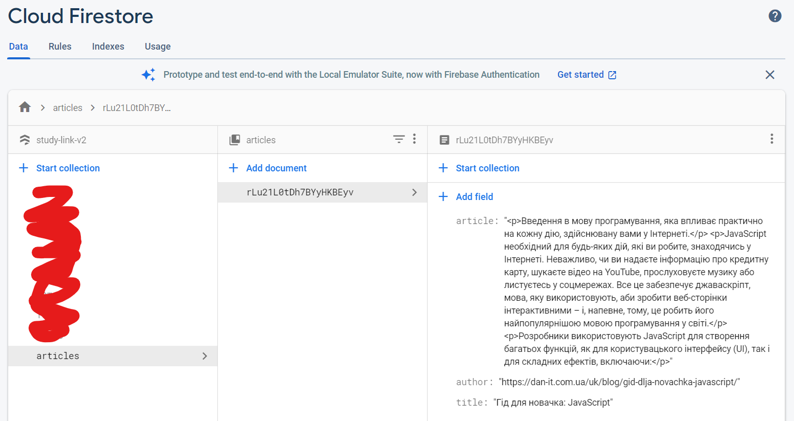
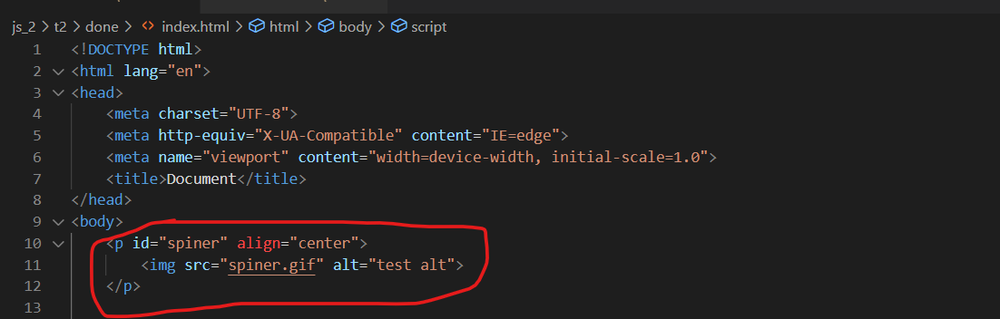
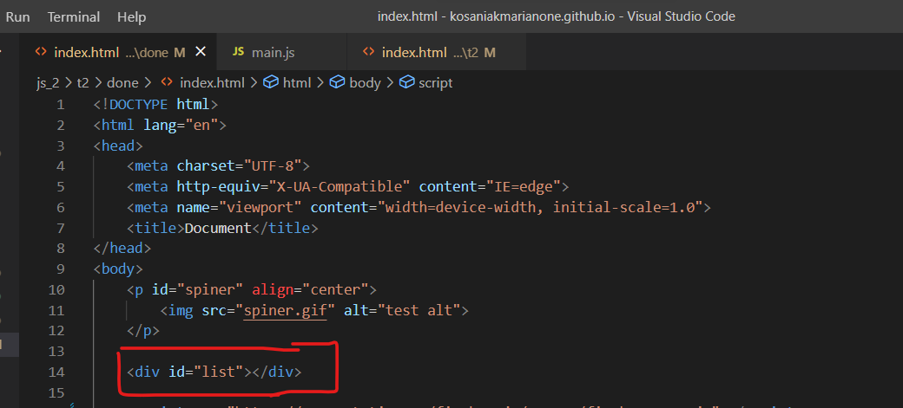
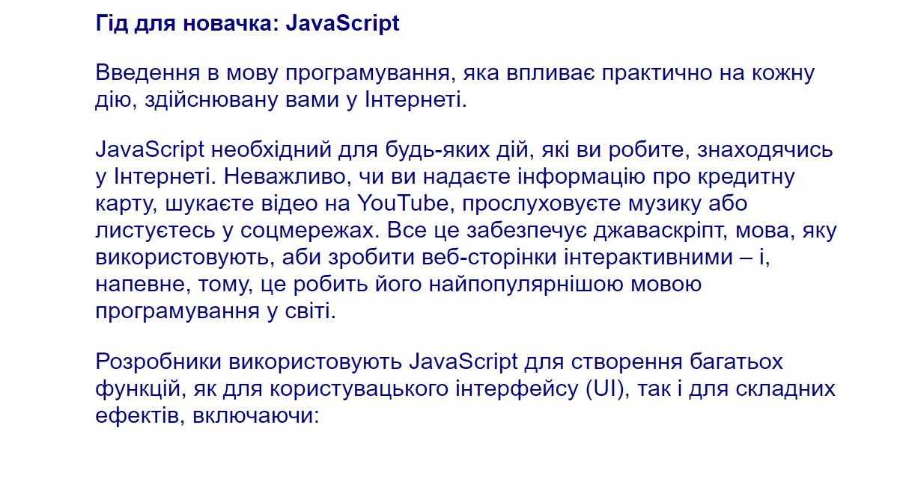
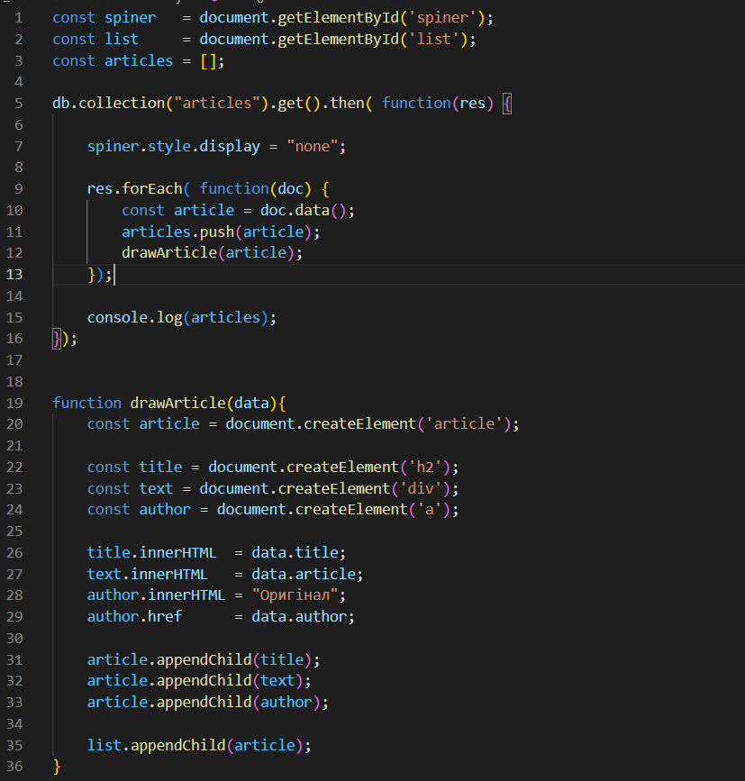

Request та Responce. Опрацювання данних отриманих від бази данних (.then())
1. Створіть окремий файл у папці firebase з конфігурацією вашої бази данних.

2. Створіть веб-сторінку та підключіть до неї firebase firestore.
<script src="https://www.gstatic.com/firebasejs/8.10.1/firebase-app.js"></script>
<script src="https://www.gstatic.com/firebasejs/8.10.1/firebase-firestore.js"></script>
<script>
// Це можна винести у окремий файл. І потім підключити його
const firebaseConfig = {
apiKey: "...",
authDomain: "...",
projectId: "...",
storageBucket: "...",
messagingSenderId: "...",
appId: "...",
measurementId: "...",
};
firebase.initializeApp(firebaseConfig);
var db = firebase.firestore();
</script>
3. Додайте у базу данних декілька статтей в колекції articles. Статті зберігайте з такими ключами: title, article, author

4. Показуйте на сторінці спінер доки данні не будуть завантаженні з бази данних.
1. Збережіть картинку клікнувши по ній правою кнопкою та виберіть опцію "Зберегти як".

2 Додайте картинку на вашу сторінку

3 Додайте прожній контейнер для статтей на html-сторінку

5. Приховайте спінер та відобразіть статті із бази данних коли вони завантажаться.

1 Створіть 3 змінних для подальшої роботи
<script>
const spiner = document.getElementById('spiner'); // контейнер із спінером
const list = document.getElementById('list'); // контейнер із статтями
const articles = []; // масив статтей які ми отримаємо із бази данних
</script>
2 Створіть функцію яка буде отримувати статті із бази данних та зберігатиме їх у масив articles
<script>
const spiner = document.getElementById('spiner');
const list = document.getElementById('list');
const articles = [];
db.collection("articles").get().then( res => {
res.forEach( doc => {
const article = doc.data();
articles.push(article);
});
console.log(articles);
});
</script>
3 Приховуйте спінер після отримання відовіді зі бази данних
<script>
const spiner = document.getElementById('spiner');
const list = document.getElementById('list');
const articles = [];
db.collection("articles").get().then( res => {
spiner.style.display = "none"; // Код який ховатиме блок із спінером
res.forEach( doc => {
const article = doc.data();
articles.push(article);
});
console.log(articles);
});
</script>
4 Створіть функцію drawArticle(data) яка прийматиме у якост аргументу об'єкт (статтю).
Функція повинна створювати html-елемент article.
Заповніть цей елемент відповідними полями від статті.
У кінці додавайте у блок з id list стврений блок article
<script>
//....
function drawArticle(data){
const article = document.createElement('article'); // Створюємо новий html елемент article
const title = document.createElement('h2'); // Створюємо новий html елемент h2 (заголовок для article)
const text = document.createElement('div'); // Створюємо новий html елемент div (контейнер для тексту у article)
const author = document.createElement('a'); // Створюємо новий html елемент а (посилання на ресурс у article)
title.innerHTML = data.title; // Додаємо відповідні тести у потрібні блоки статті.
text.innerHTML = data.article; // Використовуютсья .innerHTML для того, щоб враховуватии htьl теги збержені у базі данних
author.innerHTML = "Оригінал";
author.href = data.author;
article.appendChild(title); // Вставляємо заголовок у елемент article
article.appendChild(text); // Вставляємо текст у елемент article
article.appendChild(author); // Вставляємо посилання у елемент article
list.appendChild(article); // Вставляємо article у елемент на нашій стоорінці
}
</script>
4 Викликайте функцію для відображення статті у масиві який опрацьовує відповідь від бази данних.
<script>
//....
db.collection("articles").get().then( res => {
spiner.style.display = "none";
res.forEach( doc => {
const article = doc.data();
articles.push(article);
drawArticle(article) // Додати на сторінку кожну статтю
});
console.log(articles);
});
//....
</script>
